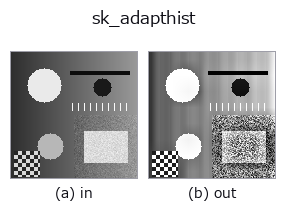

gray op• Datenarten: image → image
• Aufruf: fullseye.apply(img, "sk_adapthist", a=0.5, b=0.5) (das 2-D-Modell ist ein Bild plus zwei skalare Regler a,b∈[0,1])

*Die Abbildung ist die tatsächliche Ausgabe auf einer synthetischen 128×128-Eingabe. Links Eingabe, rechts Ausgabe. Punktwolken als Draufsicht-Streudiagramm (Helligkeit = z), 1-D-Reihen als Linie, Volumen als Maximum-Projektion entlang z, Videos als mittleres Bild, komplexe Bilder als Betrag; Rückgabewerte, die kein Bild ergeben, werden als Werte gezeigt.*
Regler a durchfahren (0,1 / 0,5 / 0,9, der andere Regler auf Standard):
▸ sk_adapthist: knob a sweep (docs site)
*Regler b ändert die Ausgabe nicht (gemessen: identisch bei 0,1 / 0,5 / 0,9).*
Auf anderen Bildern (synthetische Szene / Foto / Münzen. Obere Reihe: Eingaben, untere Reihe: deren Ausgaben. Regler auf Standard):
▸ sk_adapthist: other inputs (docs site)
*Die 4. Spalte ist eine Farb-Eingabe (H,W,3). Dieser Op verarbeitet Farbe, ohne Kanäle zu vermischen (er faltet den Farbkanal nicht als dritte Raumachse).*
CLAHE (Contrast Limited Adaptive Histogram Equalization, kontrastbegrenzte adaptive Histogrammausgleichung). Unterteilt das Bild in kleine Kacheln und gleicht das Histogramm lokal in jeder Kachel aus, wodurch der lokale Kontrast auch bei Bildern mit starken Hell-Dunkel-Unterschieden angehoben wird.
> Die ausführliche Beschreibung unten ist der Originaltext — Zusammenfassung und Überschriften sind übersetzt.
HALCON に直接対応するものは無い。実装は `exposure.equalize_adapthist(clip(v,0,1), clip_limit=0.01+0.05*a)` —— a は clip_limit(コントラスト制限の強さ)を 0.01〜0.06 に振る(大きいほど強くコントラストが上がりノイズも増幅されやすい)。b は未使用。タイル分割数はskimage の既定値(8x8)のまま。
Regler (gemessen): `a` von 0 bis 1 zu variieren ändert die Ausgabe nicht (an fünf verschiedenen Eingaben gemessen).
Vergleichbarkeit der Werte (gemessen): Die Ausgabe wird auf das Maximum des jeweiligen Bildes normiert (das Ausgabemaximum ist stets 1.0, und eine Skalierung der Eingabe lässt die Ausgabe unverändert). Werte sind daher nicht bildübergreifend vergleichbar — ein Merkmal gleicher Stärke erhält je nach dem stärksten Merkmal im Bild einen anderen Wert, und in einem Bild mit nur schwachen Merkmalen wird das Rauschen auf 1.0 angehoben. Für einen Vergleich über Bilder hinweg auf eine gemeinsame Referenz umskalieren.
Leeres Bild (gemessen): Ein Bild gleichmäßiger Helligkeit macht unabhängig von der Helligkeit jedes Pixel zum Vordergrund (1). Ein überbelichtetes, verdecktes oder motivloses Bild kommt als „100 % defekt“ zurück; prüfe daher vorgelagert auf Gleichmäßigkeit und verwirf solche Bilder.
• Leitfaden zur Familie gallery2d_gray_arith
• Katalog der Beispieldaten (Download-URLs / Lizenzen) — 2-D nutzt skimage.data (BSD/Public Domain) plus synthetische Bilder, 3-D nennt Download-URLs echter Datenquellen (Stanford, PDS, …).
• Herkunft und Literatur der Operatoren — die Quellen der Forschung/Verfahren, auf denen diese Operatorfamilie beruht.
• Der kanonische Algorithmus (Autor, Jahr) und seine Anwendungen stehen im Familienleitfaden oben.
Das Programm unten ist nachweislich lauffähig (gleiche Eingabe wie die Abbildung). In der Studio-Hilfe wird dieser Block zu Schaltflächen, die es sofort laden und ausführen.
sk_adapthist 0.50 0.50
▸ Load this pipeline · Load & run
• gallery2d_gray_arith — py -3.11 examples/gallery2d_gray_arith.py
image als Eingabe)identity · gaussian · mean_box · bilateral · unsharp · median · min_filter · max_filter
gray)gamma · quantize_uniform · quantize_lloyd_max · quantization_error · dither_ordered · dither_floyd_steinberg · companding_mu_law · banding_map
*Provenance: ops.py — 2D Operator-Registry. Diese Notiz wird von tools/opdocs.py md erzeugt (nicht von Hand bearbeiten).*
© 2026 Kazufumi Furuse — Fullseye operator documentation. Licensed under Apache-2.0.
{kind=link}
{kind=link}